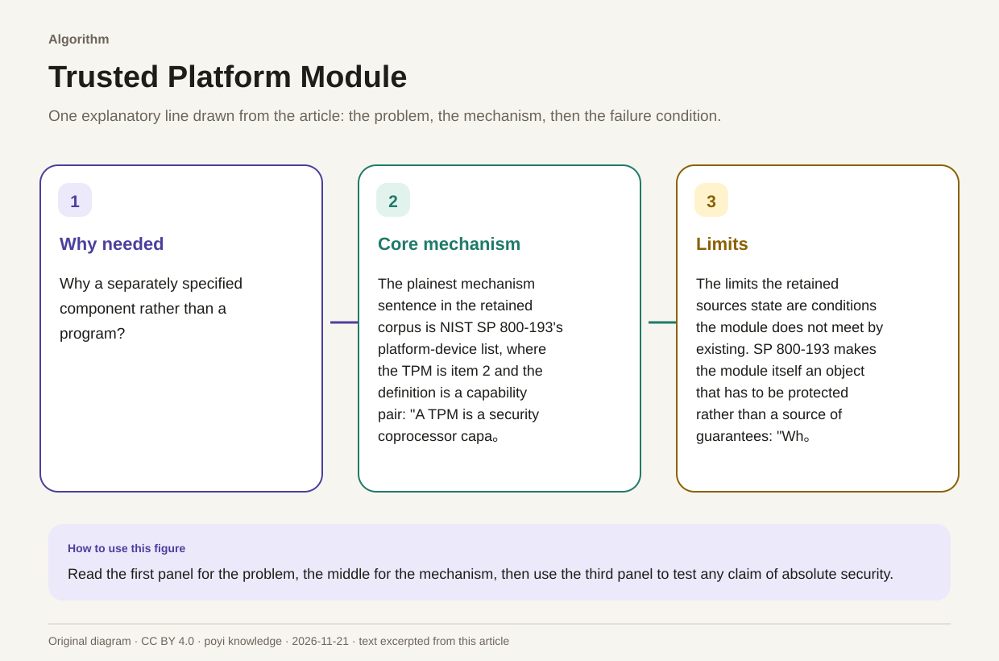
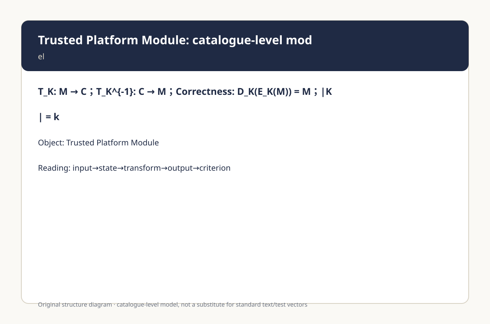

Principles
Algorithm: Trusted Platform Module (可信平台模块). The plainest mechanism sentence in the retained corpus is NIST SP 800-193's platform-device list, where the TPM is item 2 and the definition is a capability pair: "A TPM [4] is a security coprocessor capable of securely storing and using cryptographic keys and measurements of the state of the platform." The bracketed 4 is this document's own reference number for the TCG specification, given at sp800-193.txt:894-900. The same line draws the three uses out of that pairing, "These capabilities can be used, among other things, to secure data stored on the system, provide a strong device identity, and to attest the state of the system." So what the definition puts together in one addressable component is keys the platform may use while they stay under the module's own protection, and records of platform state the module can sign. The physical form is deliberately open: line 222 ends mid-sentence with "TPM's can be either discrete hardware devices,", the page furniture of lines 223-230 sits between that and its continuation, and sp800-193.txt:231 resumes "firmware executed on a platform host controller or other microcontroller (the latter are sometimes referred to as firmware TPM's, or fTPM)." Both halves are quoted as printed and not re-joined into one sentence, because the retained file does not print them as one.

Why it matters
Why a separately specified component rather than a program? RFC 4949's answer is inside what the name denotes. The entry at rfc4949.txt:17927-17930 reads "The name of a specification, published by the TCG, for a microcontroller that can store secured information; and also the general name of implementations of that specification." - the wide gaps inside that run are the six-space indentation this file gives its continuation lines, carried here as printed. Two design consequences come out of that wording. First, one abbreviation covers a document and a device class at once, which is why the glossary's own $ TPM article at rfc4949.txt:17343-17344 can only say "See: Trusted Platform Module." Second, the publisher is a standards body and not a vendor: TCG is defined at rfc4949.txt:17883-17888 as "A not-for-profit, industry standards organization formed to develop, define, and promote open standards for hardware-enabled trusted computing and security technologies, including hardware building blocks and software interfaces, across multiple platforms, peripherals, and devices." The phrase that carries the design premise is "trusted computing and security technologies", and the qualifier "across multiple" is what a hardware-enabled interface has to satisfy if the assurance is to travel between vendors; pinning the interface to a specified component rather than to one machine's software is the consequence. The glossary also keeps the module apart from the boundary it serves: the trusted computing base article (rfc4949.txt:17877-17881) closes with the cross-reference "Compare: TPM.", so the totality of protection mechanisms and the chip that provides some of them are two different things to be reasoned about.
Applications
The clearest deployment statement in this corpus is W3C's Web Authentication Level 3, which treats a TPM as one of the places a conforming authenticator may execute: "on an on-device Secure Execution Environment, Trusted Platform Module (TPM), or a Secure Element (SE)" (webauthn3.html:1506). Where the authenticator is embedded in the client, the abstract model makes the module the strongest part of it: "This is particularly important for authenticators that are embedded in the WebAuthn client, as in those cases this cryptographic module (which may, for example, be a TPM) could be considered more trustworthy than the rest of the authenticator." (webauthn3.html:5680-5682). Attestation is where the TPM is named as a format in its own right: "This attestation statement format is generally used by authenticators that use a Trusted Platform Module as their cryptographic engine." (webauthn3.html:7510-7511), whose ver field is "The version of the TPM specification to which the signature conforms." (webauthn3.html:7542). The specification records that these formats predate it - "Various existing components and OS platforms (such as TPMs and the Android OS) have previously defined" attestation statement formats (webauthn3.html:6640) - and describes the AttCA case as an authenticator "based on a Trusted Platform Module (TPM)" holding an endorsement key (webauthn3.html:6828) that requests per-credential identity keys from an attestation CA so that it "can limit the exposure of the EK (which is a global correlation handle) to Attestation CA(s)." (webauthn3.html:6832-6833). The privacy edge is documented in the certificate requirements: older EK profiles carried a module serial number, "called HardwareModuleName, that contains the TPM serial number in the EK certificate." (webauthn3.html:7628), and webauthn3.html:7629 directs that it not be placed in the attestation certificate's Subject Alternative Name.

Limits & attacks
The limits the retained sources state are conditions the module does not meet by existing. SP 800-193 makes the module itself an object that has to be protected rather than a source of guarantees: "While not all platforms include or make use of a TPM, on any system in which a TPM is included and used, its firmware must be protected given its criticality in helping ensure the trustworthiness of the platform." and, in the next sentence, "TPMs also contain non-volatile memory storage which may contain critical data and, if so, must be protected." (both sp800-193.txt:222). The fTPM realization widens the surface on the same page: the functional role is then carried by "firmware executed on a platform host controller or other microcontroller" (sp800-193.txt:231), i.e. by code that shares silicon with the host. The sharpest statement is the guideline's own rule for roots of trust at sp800-193.txt:341: "A RoT must be designed to always behave in the expected manner because its proper functioning is essential to providing its security-specific functions and because its misbehavior cannot be detected." The clause cuts both ways - the platform cannot check the component from outside, which is precisely why that component is trusted, and it is why the document's protection, detection and recovery guidance is addressed to the firmware of that module and of the devices around it, not to trusting the chip on its own terms. The same line 341 also lists what a root of trust is for ("measurement, storage, reporting, recovery, verification, and update"), which is the functional vocabulary a TPM is being asked to carry. What the three registered files do not contain is a break of the specification: no attack on the TPM's cryptographic design is reported in them, so none is claimed here; WebAuthn's answer to the same unknowability is structural, checking fields and certificate chains instead (webauthn3.html:7596-7615).
History
The three registered files date themselves and say nothing about the module's first appearance. The earliest is RFC 4949: its header carries "August 2007" at line 8 and "Obsoletes: 2828" at line 10, and its title line at 14 reads "Internet Security Glossary, Version 2", a string that recurs on the page imprints (line 17924 pairs it with the same date). That document already records the term as an established abbreviation with a standards body named as its publisher (lines 17927-17931), and it gives no year for the specification it points at - which is the honest limit of what a glossary supplies. The next registered date is SP 800-193, titled at its line 2 and dated May 2018 at line 11; it cites the TCG's library specification as reference [4] (sp800-193.txt:894-900, with the access date printed as 5/2/18), and that is the only TCG document this corpus registers a path for. The newest is the WebAuthn Level 3 copy, dated 25 August 2026 at webauthn3.html:972, which carries a tpm attestation format and a bibliographic list of TPMv2 parts. None of these lines prints a first-publication year for the TPM specification, a version history, or the name of anyone who proposed it, so this entry attributes no inventor and no origin date; the catalogue row's own unretained bibliography entry for the TCG specification is not evidence here.
Worked example & verification
Formal model and reproduction steps
[C=E_K(P;r),\qquad P=D_K(C)]
Trusted Platform Module: the registered public parameters, key material or randomness, and message are mapped through the stated transformation to an output checked against the registered criterion. The worked example is a structural reproduction, not a new test vector; parameter ranges, standard versions and implementation details remain source-bound.
References
- Wikipedia search entry for 可信平台模块. https://zh.wikipedia.org/w/index.php?search=%E5%8F%AF%E4%BF%A1%E5%B9%B3%E5%8F%B0%E6%A8%A1%E5%9D%97
- Handbook of Applied Cryptography (Menezes, van Oorschot, Vanstone). https://www.cacr.math.uwaterloo.ca/hac/